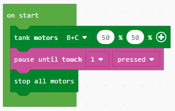

Detyrë - Përdorimi i sensorëve¶
Përdorimi i sensorit të prekjes
Së pari, ne do të krijojmë një program që lejon që roboti të lëvizë derisa përdoruesi të prekë sensorin e prekjes me dorën e tij / saj. Qëllimi i këtij programi është mbajtja në lëvizje e robotit derisa dikush të prekë sensorin.

Bazuar në vendosjen e detyrës, roboti duhet të ecë përpara. Ne do ta arrijmë këtë duke shtuar bllokun  (roboti ec përpara).
(roboti ec përpara).
Hapi tjetër do të ishte tërheqja e bllokut  nga kategoria . Nga lista rënëse e këtij blloku, ne do të zgjedhim opsionin 1, i cili përfaqëson portin e lidhur me sensorin e prekjes.
Pastaj, duhet të zgjedhim opsionin e shtypur, i cili paraqet gjendjen e sensorit të prekjes. (Kur një dorë prek sensorin).
Më pas, bazuar në vendosjen e detyrës, roboti duhet të ndalojë, i cili do të arrihet duke shtuar bllokun
nga kategoria . Nga lista rënëse e këtij blloku, ne do të zgjedhim opsionin 1, i cili përfaqëson portin e lidhur me sensorin e prekjes.
Pastaj, duhet të zgjedhim opsionin e shtypur, i cili paraqet gjendjen e sensorit të prekjes. (Kur një dorë prek sensorin).
Më pas, bazuar në vendosjen e detyrës, roboti duhet të ndalojë, i cili do të arrihet duke shtuar bllokun  . Në këtë mënyrë, roboti është ndalur.
. Në këtë mënyrë, roboti është ndalur.
Pamja e programit:
Lidhni EV3 Brick me kompjuterin përmes kabllit USB dhe shkarkoni skedarin .uf2 në kompjuterin tuaj duke klikuar butonin  . Duke tërhequr skedarin mbi EV3, është gati të fillojë punën.
. Duke tërhequr skedarin mbi EV3, është gati të fillojë punën.
Përdorimi i sensorit të ngjyrave
Sensori i ngjyrave është një sensor dixhital që mund të zbulojë ngjyrën ose intensitetin e dritës që hyn në dritaren e vogël në fytyrën e sensorit. Ky sensor mund të përdoret në tre mënyra të ndryshme:
Mënyra e ngjyrave,
Mënyra e reflektuar e Intensitetit të Dritës, dhe
Mënyra e Intensitetit të Dritës së Ambientit.
Në modalitetin e ngjyrave, sensori i ngjyrave njeh shtatë ngjyra - të zeza, blu, jeshile, të verdhë, të kuqe, të bardhë dhe kafe plus asnjë ngjyrë:
Kjo aftësi për të bërë dallimin midis ngjyrave do të thotë që roboti mund të programohet për të renditur topa ose blloqe me ngjyrë, të themi emrat e ngjyrave të njohura ose të ndalet kur sheh të kuqe.

Në modalitetin e reflektuar të intensitetit të dritës, sensori i ngjyrave mat intensitetin e dritës së reflektuar. Sensori përdor opsionin e errët (shumë e errët) dhe drita (shumë e lehtë). Kjo do të thotë që roboti mund të programohet të lëvizë në një sipërfaqe të bardhë derisa të zbulojë një vijë të zezë ose të interpretojë sipërfaqen e koduar me ngjyra të një karte identifikimi.
Në modalitetin e intensitetit të dritës së ambientit, sensori i ngjyrave mat forcën e dritës që hyn në dritare nga ambienti i tij, siç janë rrezet e diellit ose rrezja e një elektrik dore. Sensori përdor opsionin e errët (shumë e errët) dhe e çelur (shumë e lehtë). Kjo do të thotë që roboti mund të programohet për të ndezur një alarm zgjimi kur Dielli lind në mëngjes, ose të ndalojë së punuari kur dritat të dalin jashtë.

Ne do të demonstrojmë përdorimin e sensorit të ngjyrave duke krijuar një program, i cili do të lejojë që roboti të lëvizë derisa të shohë ngjyrën e gjelbër. Kur roboti sheh jeshil, ai do të ndalet.
Bazuar në vendosjen e detyrës, roboti duhet të ecë përpara. Kjo do të arrihet duke shtuar bllokun (roboti ec përpara). Pastaj, nga kategoria ne do të zgjedhim bllokun  . Nga lista rënëse e këtij blloku, ne do të zgjedhim opsionin 3, i cili përfaqëson portin e lidhur me sensorin e ngjyrave. Hapi tjetër është zgjedhja e ngjyrës nga lista rënëse
. Nga lista rënëse e këtij blloku, ne do të zgjedhim opsionin 3, i cili përfaqëson portin e lidhur me sensorin e ngjyrave. Hapi tjetër është zgjedhja e ngjyrës nga lista rënëse  duke klikuar në ngjyrën e dëshiruar (në rastin tonë jeshil). Dhe pastaj, bazuar në kushtet e detyrave, roboti duhet të ndalojë, i cili do të arrihet me shtimin e bllokut . Në këtë mënyrë, roboti do të ndalet.
duke klikuar në ngjyrën e dëshiruar (në rastin tonë jeshil). Dhe pastaj, bazuar në kushtet e detyrave, roboti duhet të ndalojë, i cili do të arrihet me shtimin e bllokut . Në këtë mënyrë, roboti do të ndalet.
Kodi i programit dhe pamja e simulimit (roboti po lëviz derisa të shohë ngjyrën e gjelbër):

Lidhni EV3 Brick me kompjuterin përmes kabllit USB dhe shkarkoni skedarin .uf2 në kompjuterin tuaj duke klikuar butonin . Duke tërhequr skedarin mbi EV3, është gati të fillojë punën.
Përdorimi i sensorit ultrasonic
Ne do të demonstrojmë përdorimin e sensorit ultrasonik duke krijuar një program, i cili do të lejojë që roboti të lëvizë derisa të hasë në një pengesë.
Bazuar në vendosjen e detyrës, roboti duhet të ecë përpara. Kjo do të arrihet duke shtuar bllokun (roboti ec përpara).
Pastaj, nga kategoria ne do të zgjedhim bllokun . Nga lista drop.down e këtij blloku, ne do të zgjedhim opsionin 4, i cili paraqet portin e lidhur me sensorin tejzanor. Nga menyja drop-down  do të zgjedhim opsionin
do të zgjedhim opsionin near. Meqenëse bazuar në kushtet e detyrës, roboti duhet të ndalet. Kjo do të arrihet me shtimin e bllokut . Në këtë mënyrë, roboti do të ndalet.
Kodi i programit dhe pamja e simulimit (roboti po lëviz derisa të shohë një objekt):

Lidhni EV3 Brick me kompjuterin përmes kabllit USB dhe shkarkoni skedarin .uf2 në kompjuterin tuaj duke klikuar butonin . Duke tërhequr skedarin mbi EV3, është gati të fillojë punën.